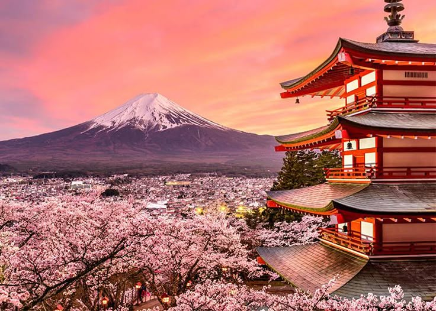

Відвідати Фудзіяму, Кіото чи Токіо – чудовий вибір для подорожі!
Не забудьте побачити найвідоміші місця Японії!
| Місце | Ціна | Опис | |
|---|---|---|---|
| Вхідний квиток | Транспорт | ||
| Онсен в Хаконе | $50 | $30 | Хаконе — один з найвідоміших курортів для відпочинку в гарячих джерелах (онсенах) з чудовими краєвидами на гору Фудзі. |
| Парки розваг "Діснейленд" | $70 | $40 | Токійський Діснейленд — один з найбільших і найвідоміших парків розваг в Азії з безліччю атракціонів.У Діснейленді є багато тематичних зон, і парк відкритий для відвідувачів щодня. |
| Акваріум в Осаці | $25 | $20 | Акваріум в Осаці є одним з найбільших в світі, де можна побачити морське життя з різних частин планети. |
| Замок Нара | $10 | $15 | Замок Нара — старовинна фортеця, що є частиною культурної спадщини Японії, з прекрасними садами та тваринами, що гуляють. |
| Національний парк "Ширетоко" | $20 | $10 | Ширетоко — природний національний парк на південному сході Хоккайдо, що охоплює лісові масиви, озера та заповідні території. |